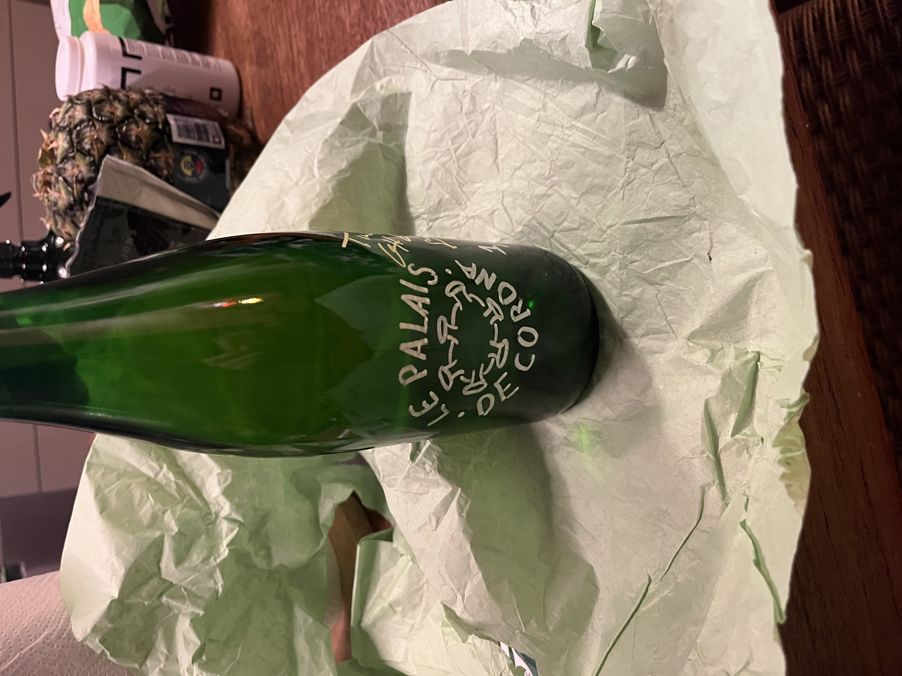

🔥 OM OS 🔥Vi er et OK cider-bryggeri fra Nørrebro Vi brygger cider med attitude og æbler |
🍎 VORES CIDER 🍎Årgang 2025 - Første presVores første og foreløbigt eneste cider. Tør, frisk og let perlende med klar æblesyre. Håndpressede æbler · Naturlig gæring · 6,2% vol |

📍 BESØG OS 📍2200 København N |
© 1998-2026 Hjemme-cider Official Fan Site
Best viewed in Netscape Navigator 4.0